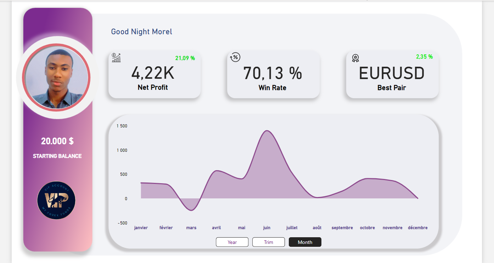
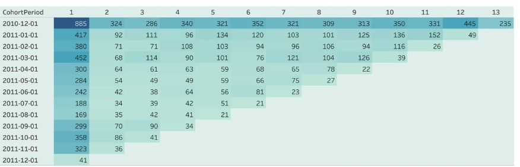
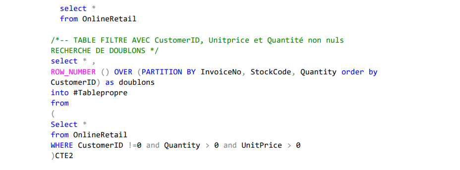
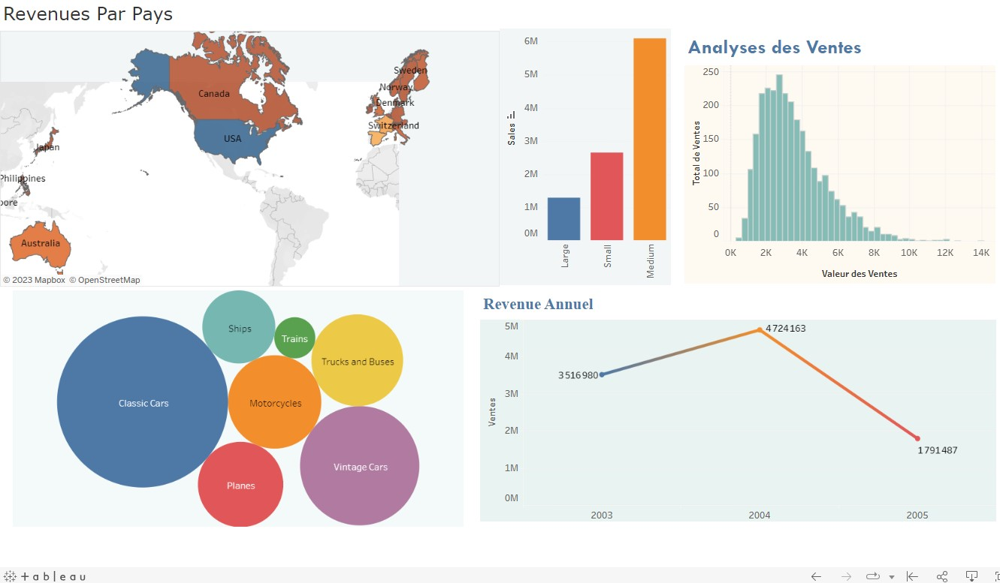
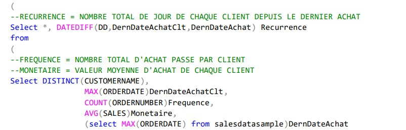
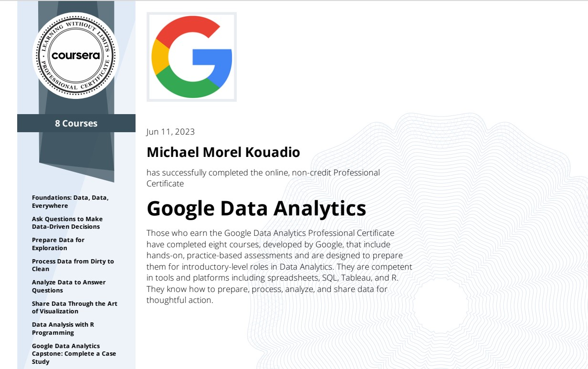
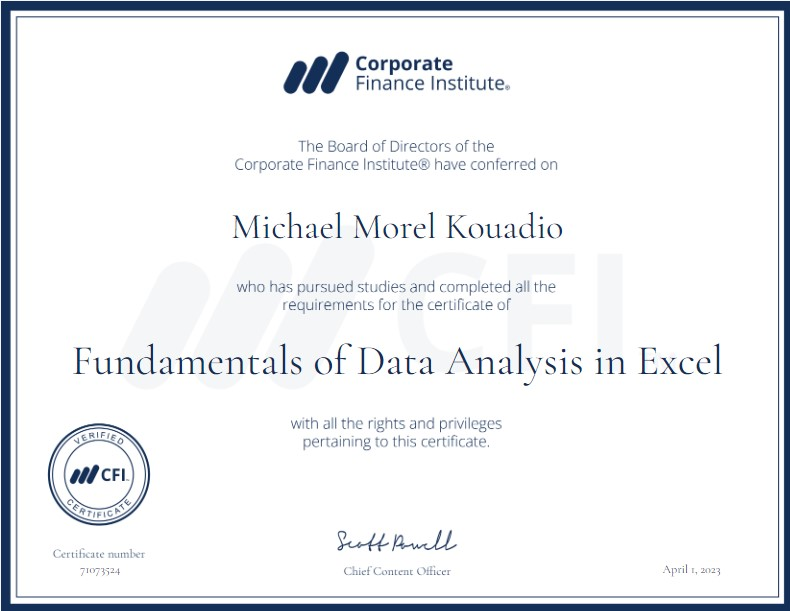

Intro
L'analyse de données est un processus qui consiste à examiner et à interpréter des données à travers différents outils afin d'élaborer des réponses à des questions.
Ce "Portfolio" a été crée afin de vous montrer l'analyse et l'interprétation de données réelles par un professionnel de la "Data"
CONSULTER MES DIFFERENTS PROJETS VIA CE LIEN: ANALYSES DE DONNEES
DIFFERENTS PROJETS
Tableau de Bord Forex PowerBI (Août 2023)

Ce tableau de bord intéractif a été conçu dans le but de suivre les gains, pertes ainsi que d'autres informations de mon compte de Trading Myforexfunds.
LIEN DU TABLEAU DE BORD
COHORTE ANALYSE SQL (AVRIL 2023)


Cette étude consistait à déterminer le taux de fidélisation et de désabonnement de la clientèle d'une entreprise sur un temps donné (1an dans notre cas)
LIEN DE LA COHORTE
Analyse RFM SQL & TABLEAU (AVRIL 2023)


Ce cas pratique d'analyse de la récurrence, la fréquence et la valeur monétaire nous a permis voir la performance des ventes de l'entreprise par ligne de produits, par gammes mais aussi par pays.
• Cela à donc permis à l'entreprise d'améliorer sa performance commerciale.
CONSULTER LE PROJET : ANALYSE SQL RFM & VISUALISATION
ME CONCERNANT
Morel M. KOUADIO de mon vrai nom, Comptable financier de profession et passionné d'analyse de données.
Je suis spécialisé dans la collecte, le traitement et l'analyse de données ainsi que la construction d'outils tels que les tableaux de bords intéractifs permettant d'améliorer la prise de décision.
Pour en savoir plus, CONTACTEZ MOI.
MES CERTIFICATIONS
Google Data Analyst

Excel Skills for Business : Advanced
Fundamentals of Data Analysis in Excel

Contact